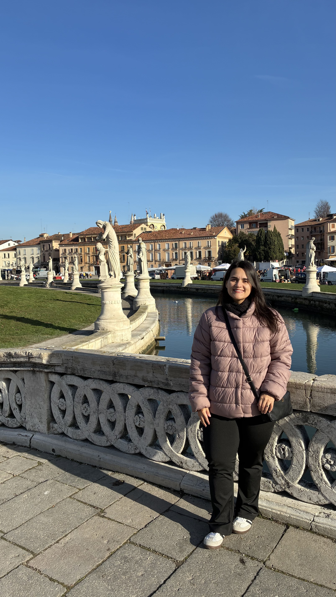
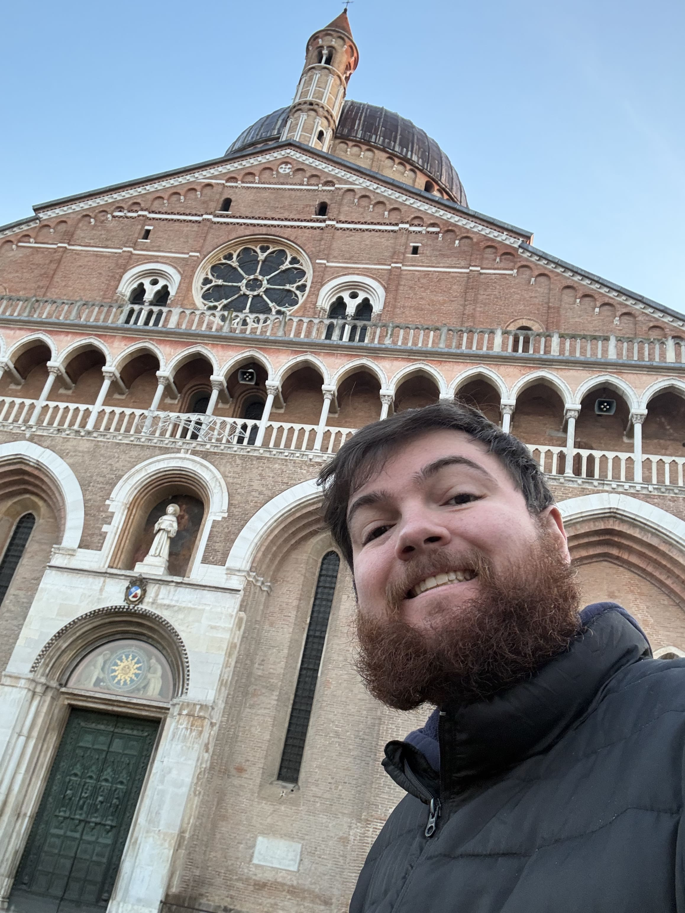
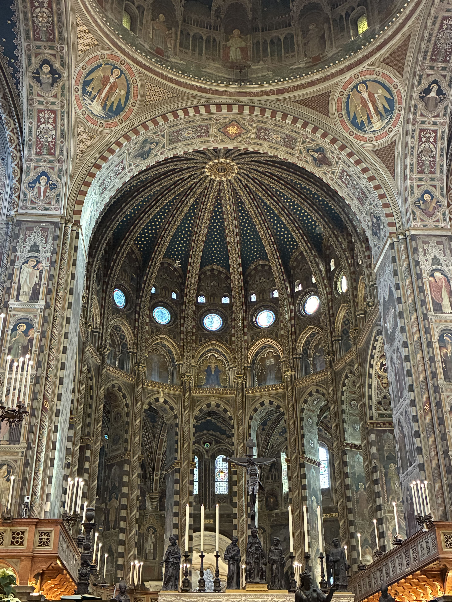

Pádua
Pádua é uma cidade universitária vibrante, famosa por sua basílica e pelos afrescos de Giotto. É um destino que mistura espiritualidade, arte e vida jovem, atraindo tanto peregrinos quanto amantes da cultura.





Milão → Pádua
Saindo de Gorla, pegue a linha vermelha (M1) até Loreto. Lá, faça a baldeação para a linha verde (M2) e siga até a estação Centrale.
Na Estação Central de Milão, compre seu bilhete de trem direto para Pádua.
A viagem dura cerca de 2 horas e custa em torno de 20 a 30 euros por trecho.
Pontos Turísticos Imperdíveis
- Basílica di Sant’Antonio: Destino de peregrinação mundial, com arquitetura impressionante e uma atmosfera espiritual que atrai milhões de visitantes todos os anos.
- Prato della Valle: Uma das maiores praças da Europa, rodeada por estátuas e jardins, ideal para passeios e contemplação da vida local.
- Cappella degli Scrovegni: Afrescos de Giotto considerados uma obra-prima da arte medieval, oferecendo uma experiência artística única e emocionante.
Gastronomia em Pádua
- Primo piatto: Bigoli al ragù d’anatra, massa típica servida com molho de pato, saborosa e tradicional.
- Secondo piatto: Pato assado, prato robusto e característico da região.
- Sobremesa 🍪: Zaeti, biscoitos tradicionais feitos com farinha de milho e passas, simples e deliciosos.
Dica dos Ussinhos 🐻💡
Melhor época: primavera, quando a cidade está florida e animada. Ideal para quem busca espiritualidade e arte além de Milão.